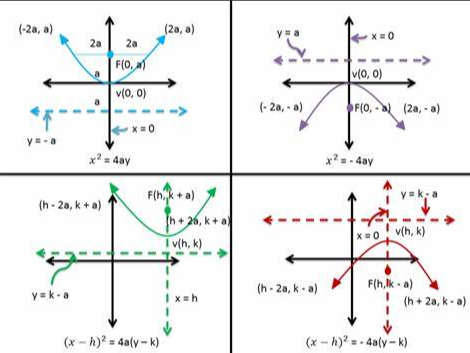

Mi az a másodfokú egyenlet?
A másodfokú egyenlet általános alakja:
ax2 + bx + c = 0
A másodfokú egyenlet megoldóképlete
A másodfokú egyenlet megoldásához az alábbi képletet használjuk:

Diszkrimináns kiszámítása
A diszkrimináns képlete:
D = b2 - 4ac
A diszkrimináns megmondja, hogy hány valós gyöke van az egyenletnek:
- D > 0: Két különböző valós gyök
- D = 0: Egy valós gyök (kettős gyök)
- D < 0: Nincs valós gyök

Hol használjuk a másodfokú egyenleteket?
A másodfokú egyenletek számos területen alkalmazhatók, például:
- Fizika: mozgás egyenletek, például a szabadon eső testek mozgása
- Gazdaság: profitmaximalizálás, költség- és bevételi modellek
- Mérnöki tudományok: szerkezetek stabilitásának vizsgálata
- Matematika: geometriai problémák megoldása, például parabola egyenletek
Próbáld ki!
Add meg az egyenlet együtthatóit, és nézd meg a megoldást:
Parabola ábrázolása
Milyen parabola fajták vannak?
A parabolák két fő típusa létezik:
- Felfelé nyitott parabola: Az egyenlet formája: y = ax² + bx + c, ahol a > 0.
- Lefelé nyitott parabola: Az egyenlet formája: y = ax² + bx + c, ahol a < 0.
